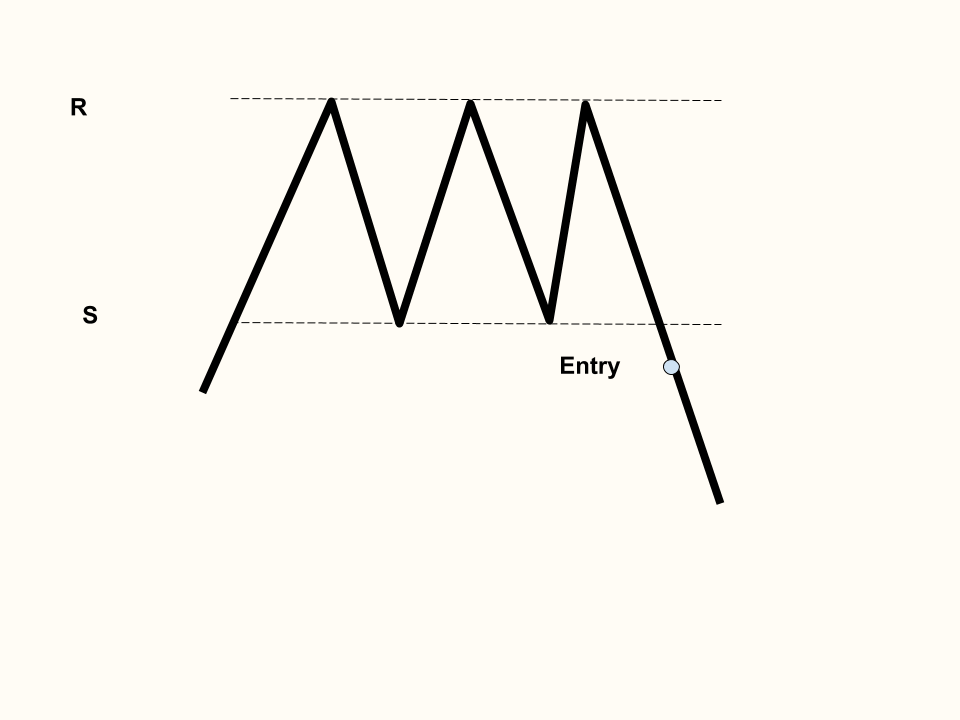

Triple Bottoms
The neckline aka resistance line is formed by the bounces off the lows
The support line is formed by three equivalent lows
Extremely bullish pattern, nearly identical to a double bottom

Triple Tops
The resistance line is formed by three equivalent highs
The neckline aka support line is formed by the lows from a rejection off the highs
Extremely bearish pattern, nearly identical to a double top
Back to Homepage
Forward to Falling and Rising Wedges